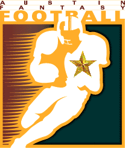

All-Time All-AFFL Teams

First Team
Second Team
Third Team
Defense and performance points not awarded prior to 1997
First Team
| Pos |
Player |
Team Name |
Scoring |
Points |
Year |
| QB |
 | Manning, Peyton |
|
Itchy Tortugas |
56 TDs, 12 300-yd games |
385 |
2013 |
| RB |
 | Tomlinson, LaDainian |
|
Beer 'n Broads |
33 TDs, 10 100-yd games |
232 |
2006 |
| RB |
 | Alexander, Shaun |
|
Da'renegades |
28 TDs, 11 100-yd games |
204 |
2005 |
| WR |
 | Moss, Randy |
|
Gonna Git Spanked |
23 TDs, 9 100-yd games |
166 |
2007 |
| WR |
 | Johnson, Calvin |
|
Rac Seekers |
16 TDs, 8 100-yd games |
131 |
2011 |
| PK |
 | Akers, David |
|
Ball Busters |
1 TD, 44 FGs, 34 PATs |
172 |
2011 |
| DT |
 | Seattle |
|
Thundering Curd |
10 TDs |
60 |
1998 |
Second Team
| Pos |
Player |
Team Name |
Scoring |
Points |
Year |
| QB |
| Brady, Tom |
|
Ball Busters |
52 TDs, 8 300-yd games |
342 |
2007 |
| RB |
 | Faulk, Marshall |
|
Got Sheep? |
26 TDs, 6 100-yd games |
182 |
2000 |
| RB |
 | Holmes, Priest |
|
Schmegalicious |
24 TDs, 10 100-yd games |
178 |
2002 |
| WR |
 | Moss, Randy |
|
Beer 'n Broads |
17 TDs, 8 100-yd games |
130 |
2003 |
| TE |
| Gronkowski, Rob |
|
Ball Busters |
18 TDs, 5 100-yd games |
125 |
2011 |
| PK |
| Anderson, Gary |
|
Ball Busters |
35 FGs, 59 PATs |
164 |
1998 |
| DT |
 | Chicago |
|
Rhoads Roadies |
9 TDs |
54 |
2012 |
Third Team
| Pos |
Player |
Team Name |
Scoring |
Points |
Year |
| QB |
 | Brees, Drew |
|
Rac Seekers |
47 TDs, 13 300-yd games |
335 |
2011 |
| RB |
| Davis, Terrell |
|
Kentucky Head Hunters |
23 TDs, 11 100-yd games |
177 |
1998 |
| RB |
| Holmes, Priest |
|
Jablome |
27 TDs, 4 100-yd games |
175 |
2003 |
| WR |
| Moss, Randy |
|
Da'renegades |
17 TDs, 4 100-yd games |
121 |
1998 |
| WR |
| Graham, Jimmy |
|
Beer 'n Broads |
16 TDs, 6 100-yd games |
119 |
2013 |
| PK |
| Wilkins, Jeff |
|
Jablome |
39 FGs, 46 PATs |
163 |
2003 |
| DT |
| Minnesota |
|
Gonna Git Spanked |
8 TDs, 1 safety |
50 |
2007 |
Home Top